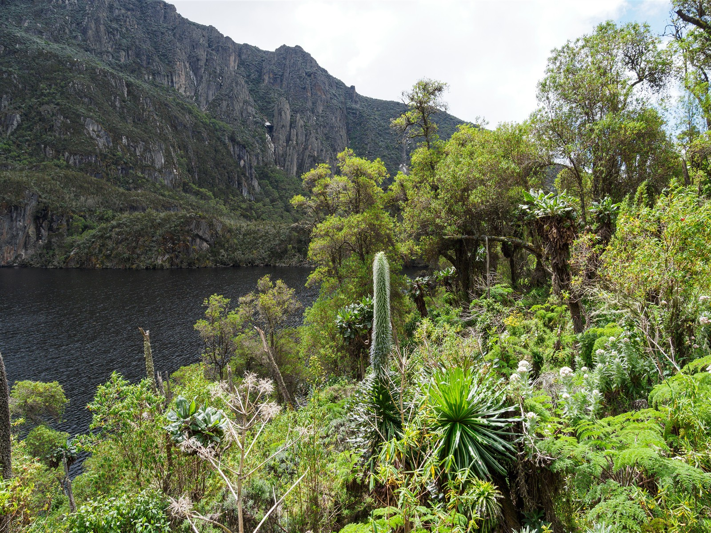
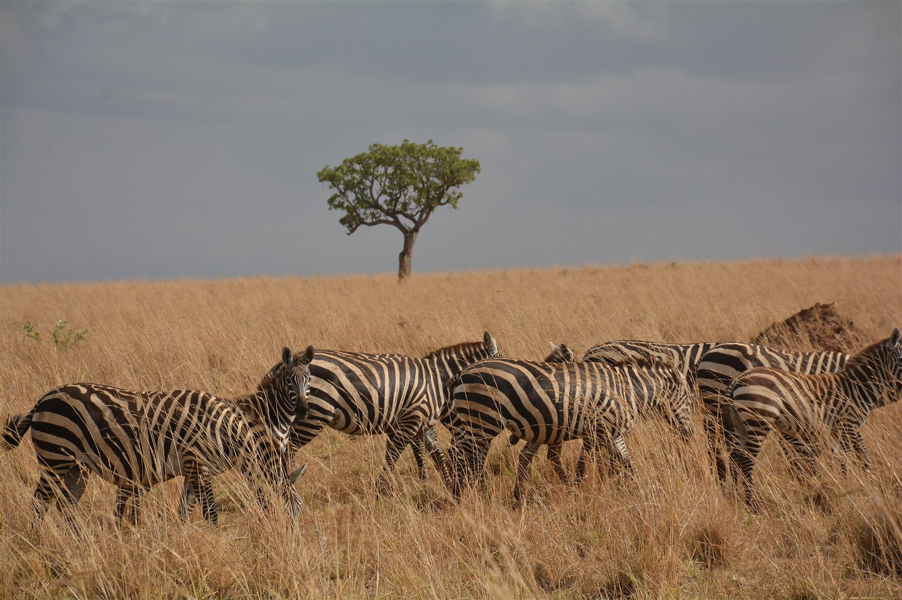
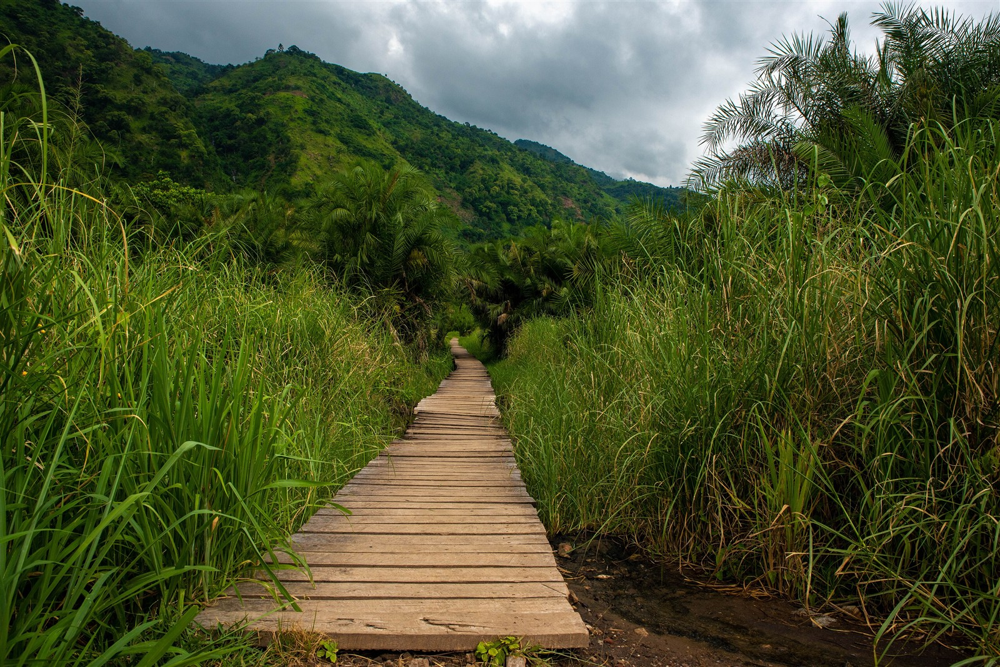
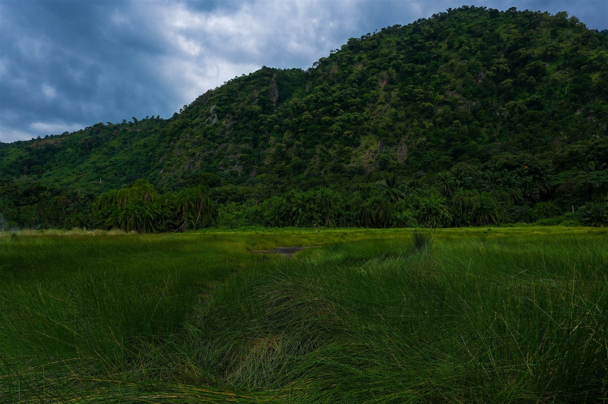
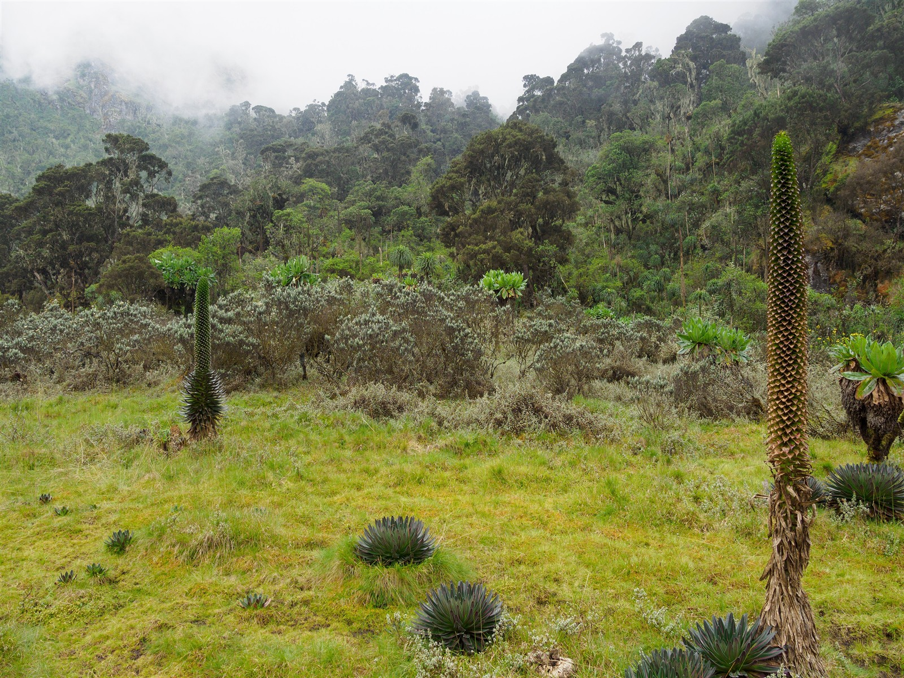
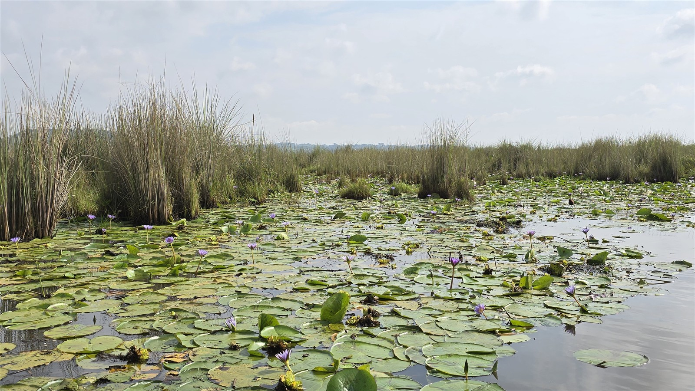
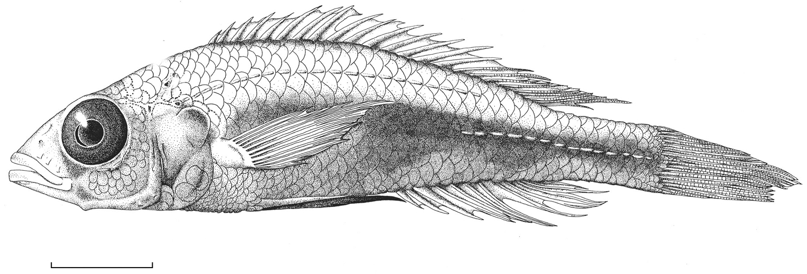

A PLACE.
A COMMUNITY.
A LIVING WORLD.
Explore the communities of life, from savanna grasslands to mountain vegetation and lake waters.
Explore ecosystems ↓
SAVANNAS & GRASSLANDS
Look at the grasses, the trees and the animals that share the open country. What shapes this community?
Explore the organisms ↗
FORESTS
From canopy to forest floor, follow the layers of vegetation and the lives within them.
Explore the organisms ↗
WHERE COMMUNITIES MEET
Explore the transitions between forest, woodland and grassland. Their boundaries raise questions about disturbance, succession and movement.
Explore the organisms ↗
MOUNTAIN COMMUNITIES
Follow vegetation through changing elevation. Which communities appear, and how do their structures change?
Explore the organisms ↗
WETLAND COMMUNITIES
Reeds, floating leaves, open water. Explore the biological communities at the meeting of land and water.
Explore the organisms ↗
ONE LAKE.
MANY LIVES.
Fish communities, aquatic plants and the organisms around them. Ask how each lake’s living community differs from the next.
Look closer at fish ↗